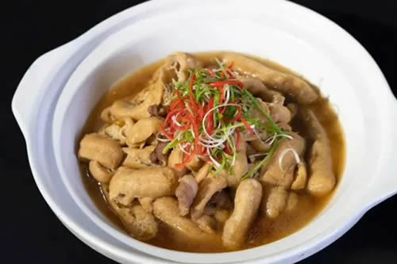
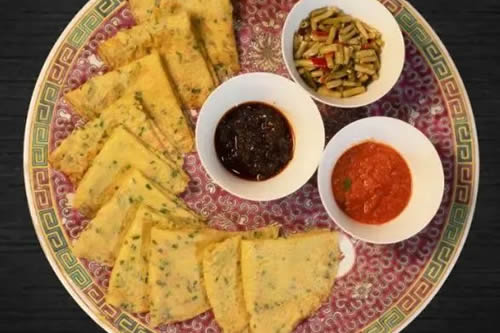

湖区概况
太湖湖水面积2338㎞²，湖面形仪西突的新月，西南部湖岸平滑呈圆弧形，东北部湖岸曲折多湖湾、山甲角。湖泊长68公里，最大宽度56公里。因泥沙淤积和人工围垦，一些岛屿分别与东、西庭山连体，近岸的则与湖岸相连成半岛，现尚存大小岛屿48座，以西洞庭山面积最大，为75㎞²。
太湖西和西南侧为丘陵山地，东侧以平原及水网为主。
舌尖上的太湖
花亭湖鱼头
花亭湖鱼头是安徽省安庆市的美食。
2022年1月，花亭湖鱼头入选安徽省“特色美食200道 ”名单。
太湖县花亭湖环境优美、水质优良，湖中盛产鳙鱼。砂锅鱼头肉质鲜嫩，味道醇厚。当地人流行以砂锅鱼头宴客，当客人揭开砂锅上的红绸带，预示着美好的祝福随之到来；鱼汤加入太湖手工挂面，寓意友情绵绵，长长久久。

弥陀参条烧肉
弥陀参条，采用优质黄豆、精制菜籽油手工制作而成。清朝嘉庆年间，朱元璋后裔朱永全家从皖北迁至太湖县弥陀寺，尝试用油炸豆腐来提高豆腐的保质期。后来，当地人把经过油炸像人参的豆腐取名为“参条”。“参条”是冬季下火锅的绝佳配料，入口柔软多汁，同时也是馈赠亲朋好友的首选礼品。

龙宫煎饼
太湖的煎饼有很多，龙宫煎饼是最具特色的。其色泽金黄，胡萝卜的红，韭菜的绿，就像红绿宝石嵌入其中，营养丰富，口感香绵。
拜石状元糕
嘉庆元年，丙辰恩科会试。赵文楷从太湖县进京赶考，一路舟车劳顿，其母舍不得儿子在路上受饿，特意用米粉和芝麻做成一种小糕点，让赵文楷带着上路。赵文楷到了京城，夺取头甲第一名，高中状元。状元糕也由此得名，流传至今。